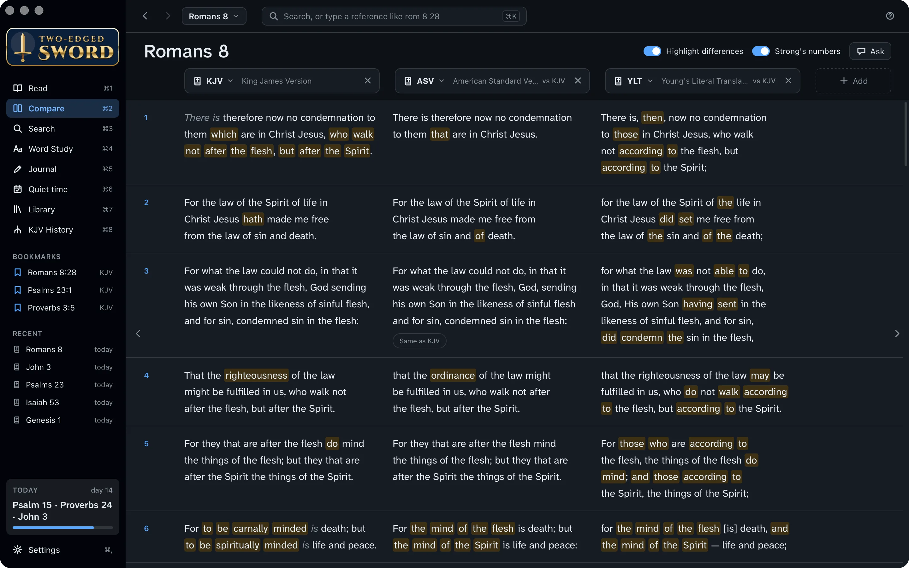
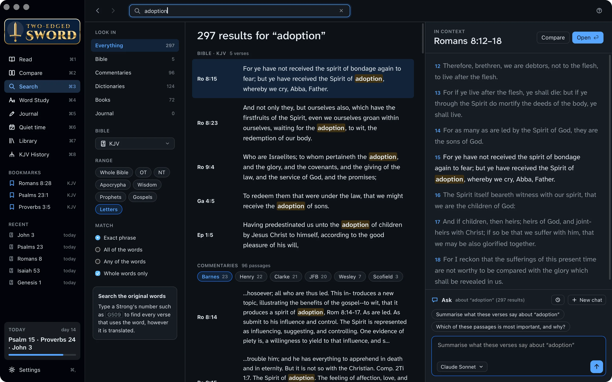
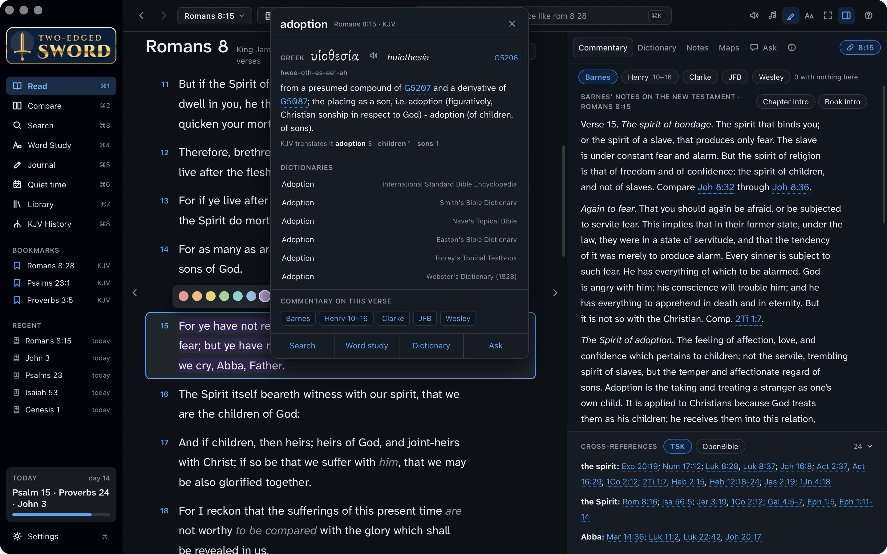
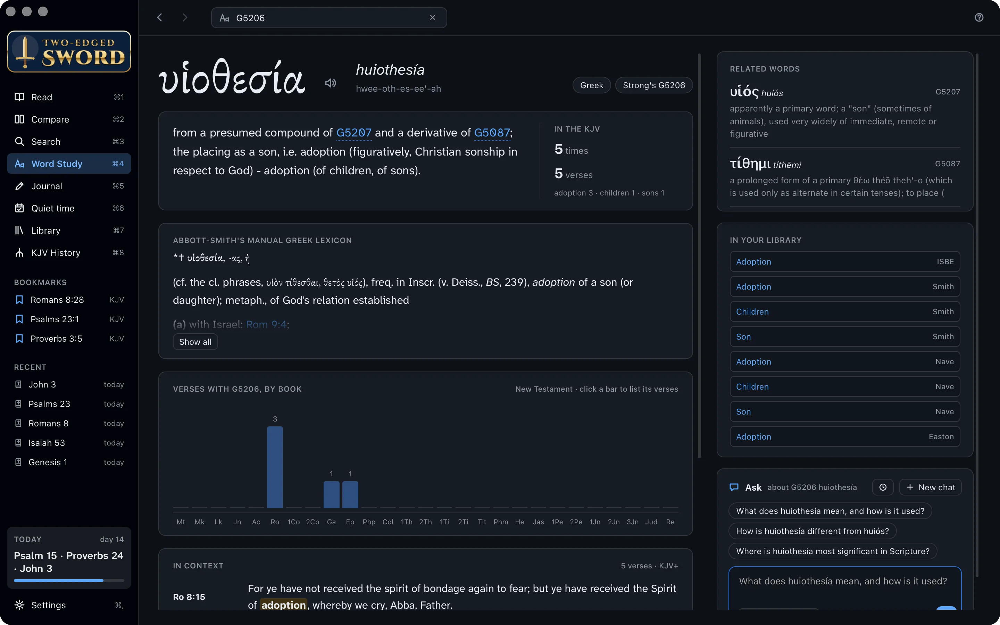
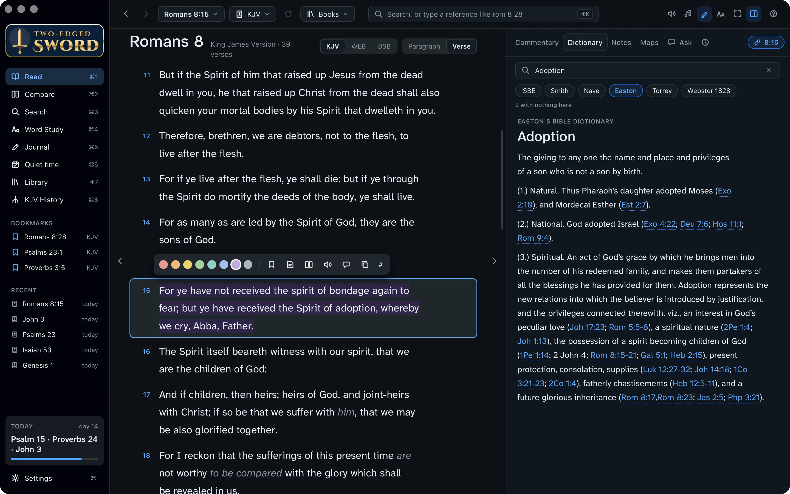
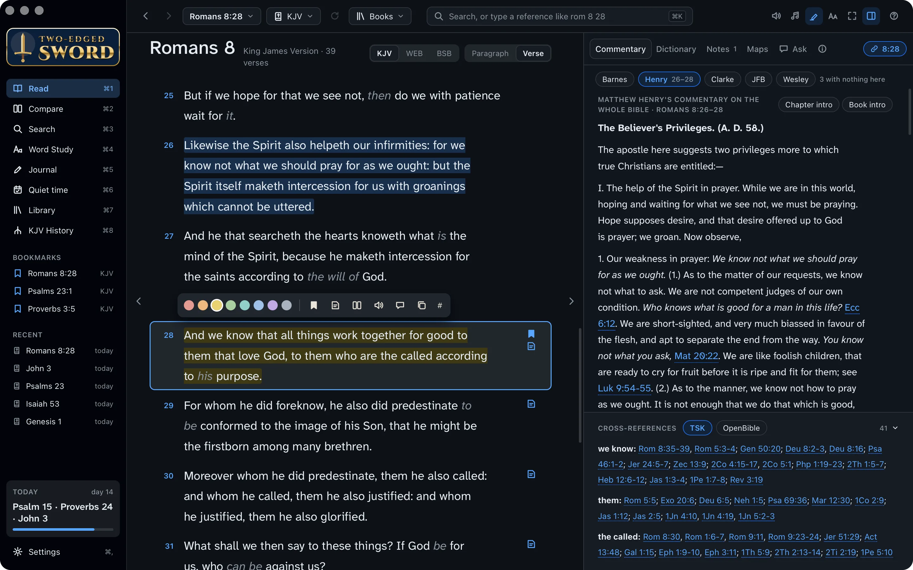
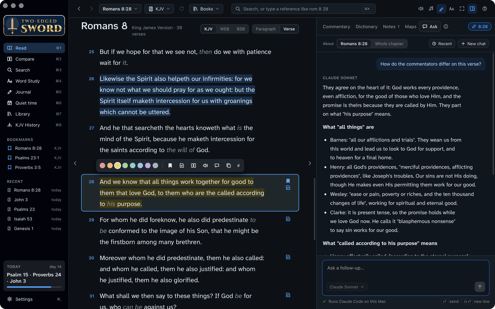
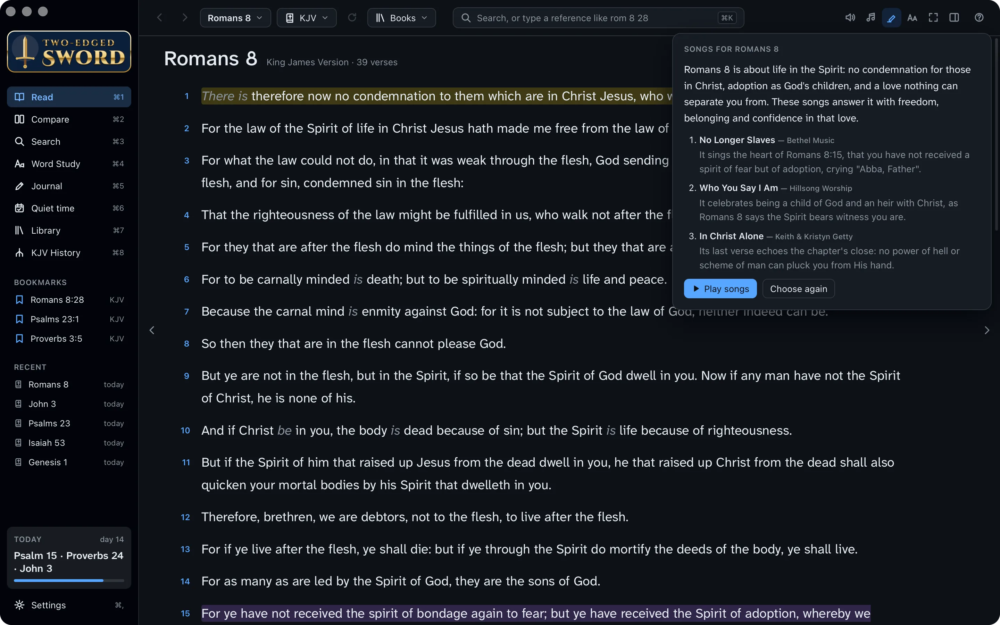
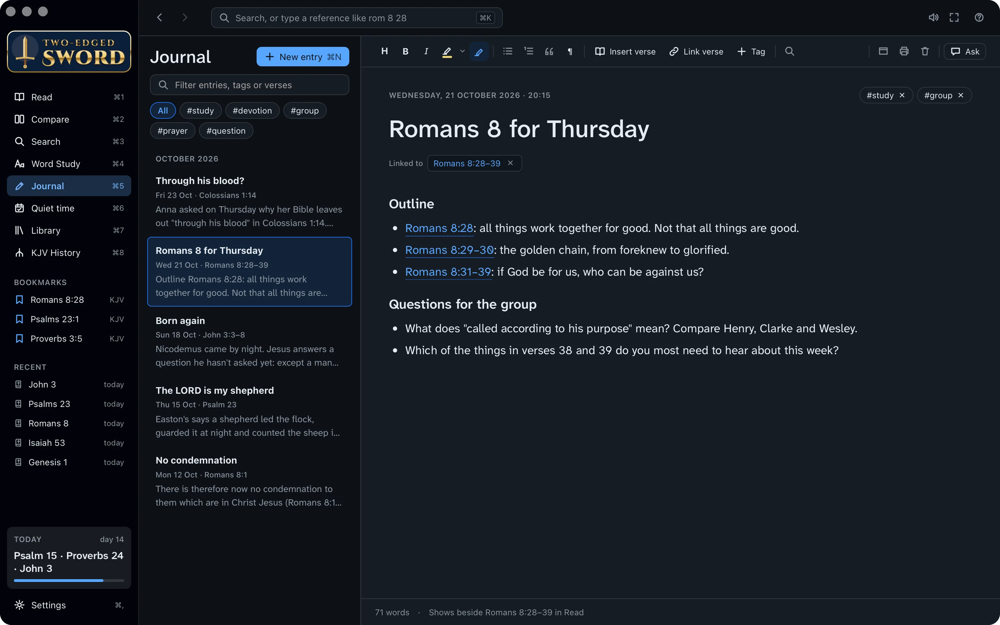
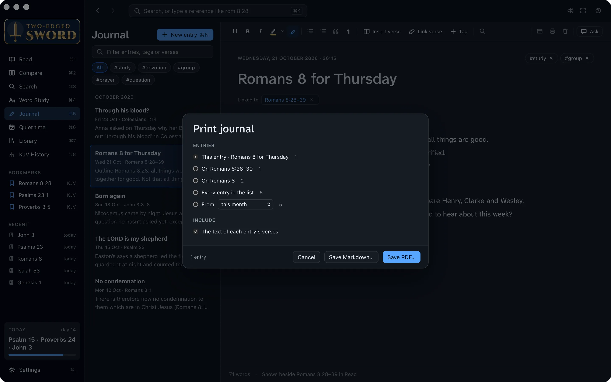

Tutorials › Teaching
Lead a study
on Romans 8.
Prepare Thursday's group from one chapter, and learn the app's study tools as you go.
There is therefore now no condemnation to them which are in Christ Jesus, who walk not after the flesh, but after the Spirit.Romans 8:1
I'm using a
The steps and keys below follow your choice.
The story
Mark, who usually leads the Thursday group at Hillside Church, is away next week, and he's asked you to lead the study on Romans 8.
It's one of the great chapters of the Bible. It opens with no condemnation for those who are in Christ Jesus, and closes with nothing able to separate us from the love of God which is in Christ Jesus our Lord. In between, the Holy Spirit makes us God's children, bears witness with our spirit and helps us when we don't know how to pray. By Thursday you'll understand it better yourself, and have a handout for everyone.
- Three translationsside by side
- A Greek wordstudied through
- The commentatorsread and compared
- A handoutprinted as a PDF
Compare translations.
Someone in the group will be reading from another Bible. Read the chapter in three translations side by side, so you know where they say it differently.
- Open Romans 8: press ⌘K, type rom 8 and press ↩.
- Press ⌘2 for Compare. It opens at the same chapter, with the King James Version, the American Standard Version and Young's Literal Translation.
- Highlight differences, at the top right, marks the wording that differs from the first column.
- + Add puts another translation alongside, and the × on a column takes it away.

Your own columns. Settings › Bibles sets which translations Compare opens with. To compare just a few verses, select them in Read and click the compare button on their toolbar.
Search the Bible.
Verse 15 speaks of “the Spirit of adoption, whereby we cry, Abba, Father.” Where else does Paul use the word? One search looks through the Bible, every commentary and dictionary, your books and your journal at once.
- Press ⌘3 for Search, type adoption and press ↩.
- Under Range, click Letters to look only in the letters of the New Testament. Click it again to go back to the whole Bible.
- Under Look in, choose Bible, Commentaries or Dictionaries to see just those results.
- Click a result to read it in context on the right. Open takes you to it.

Exact phrase, or any word. Under Match, choose the exact phrase, all of the words or any of them. With Whole words only off, “adopt” also finds “adoption”.
Find the Greek word.
“Adoption” is one Greek word, huiothesia: literally, being placed as a son. Paul uses it of what God has done for us in Christ.
- Press ⌘1 to go back to Read.
- Click the word adoption in verse 15. A box shows the Greek word behind it, υἱοθεσία, its Strong's number, G5206, and how the KJV translates it elsewhere.
- Below are the dictionaries with an article on it, and the commentaries on the verse. Click the speaker to hear the word said.

Strong's numbers in the text. Choose KJV+ from the Bible menu to see a Strong's number after every word. Point at one for its entry.
Study the word.
Word Study gathers everything about one word: its entries in the lexicons, every verse that uses it, and the articles about it in your library.
- Click Word study in the word's box, or press ⌘4 and type G5206.
- Read the entries from Strong's and the other lexicons, then the verses. The word comes only five times, all in Paul's letters.
- Click a verse to read it in context. Galatians 4:4–6 is worth reading aloud on Thursday: God sent forth His Son, that we might receive the adoption of sons, and the Spirit of His Son into our hearts.

Any word, any way. Word Study's box takes a Strong's number, an English word such as love, or the word spelt out, such as agape.
Read the dictionaries.
A Bible dictionary gives the background a modern reader misses: what adoption meant in Paul's day, and what it means to be made a child of God.
- In Read, select verse 15, and click the Dictionary tab in the study pane.
- Type adoption in its box. It looks the word up in all your dictionaries at once.
- Click a dictionary's name, such as Easton or ISBE, to read its article. References in it are links.

Read the commentators.
Verse 28 is the verse the group will want to talk about most. Read what the great commentators wrote on it.
And we know that all things work together for good to them that love God, to them who are the called according to his purpose.Romans 8:28
- Select verse 28, and click the Commentary tab.
- Click each name in turn: Matthew Henry, Adam Clarke, John Wesley, Albert Barnes, and Jamieson, Fausset & Brown.
- Below them are the cross-references. Point at one to read it.

Your favourite first. Choose the order the commentaries come in, in the Library (⌘7).
Ask how they differ.
The commentators agree that God works all things for the good of those who love Him, but not on every word. The AI assistant can read them all and set out where they agree and where they part, naming each one.
- With verse 28 selected, click the Ask tab in the study pane (or the ask button on the verse's toolbar).
- Type your question and press ↩.
- The assistant reads your commentaries and dictionaries, and answers with its source for each point.
You ask
How do the commentators differ on this verse?
It reads your library
- Matthew Henry
- Adam Clarke
- John Wesley
- Albert Barnes
- Jamieson, Fausset & Brown
The answer
They agree on the heart of it: God works every providence, even affliction, for the good of those who love Him. They part on what “his purpose” means.
- Henry: effectually called, “according to the eternal purpose”, not for any merit of ours.
- Wesley: His “gracious design of saving a lost world by the death of his Son”.
- Clarke: “the invited”, welcomed to the blessings God first promised Abraham.

It needs an AI tool first. Ask runs Claude Code, Codex, Antigravity or GitHub Copilot, installed with your own account. The Your library tutorial sets one up. Without one, the Ask tab doesn't show.
Keep it. Add to journal, under the answer, saves it as a journal entry. Your chats stay on your computer, under Recent.
Choose songs.
Open and close the evening in worship. The assistant can choose songs from your own music to suit the chapter, and say why each one fits.
- In Read, at Romans 8, click the ♫ button at the top right.
- Choose how many songs, and click Choose songs. A card says what the chapter is about, and why each song suits it.
- Click Play songs to hear them, with the words in the reading column. Choose again picks others.

Your own music. The songs come from your Music library and play in Music. The first time, macOS asks whether the app may control Music.
Your own music. The songs are the music files in your Music folder, and the app plays them itself. Only songs whose genre is Christian, Gospel or Worship are chosen: set it in a file's Properties › Details if it isn't.
Write and print a handout.
Put your outline and questions in the journal, linked to the verses, then print it for the group.
Write the notes
- Press ⌘5 for the Journal, and ⌘N for a new entry. Call it Romans 8 for Thursday.
- Use the toolbar for headings and lists: an outline, then the questions for the group.
- Type references as you would anywhere, such as Romans 8:28. They become links, and the entry shows beside those verses in Read.
- Type # to add a tag, such as #group.

Print it
- Click the Print button on the entry's toolbar.
- Choose This entry, and tick The text of each entry's verses to print the verses with it.
- Click Save PDF… and choose where. The PDF opens once it's saved, ready to print or send to the group.

A whole series. Print can also take every entry with a tag, or every entry on a chapter, with a cover and page numbers. Up to 50 entries print at a time.
Ready for Thursday.
You've studied Romans 8 from every side, and you have a handout for the group. More than that, you've seen again that if God be for us, who can be against us? Along the way, you learned to:
- Compare translations side by side
- Search the Bible and your library
- Find the Greek behind a word
- Study a word through Scripture
- Read the dictionaries and commentators
- Ask how the commentators differ
- Choose songs for the chapter
- Write notes and print a handout